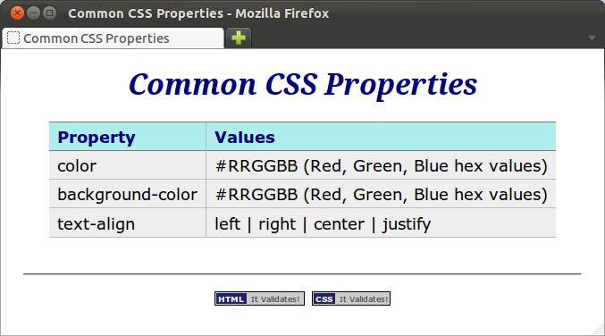
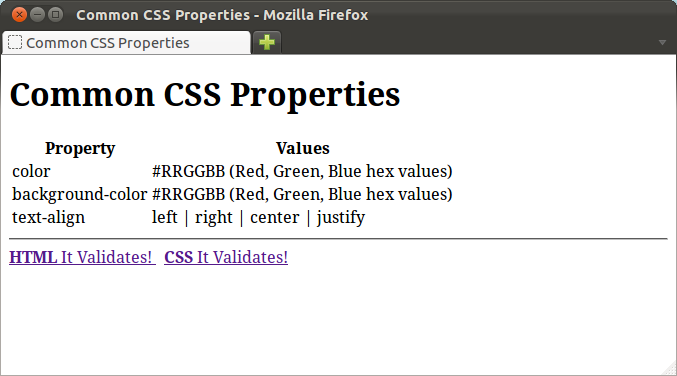

Cascading Style Sheets (CSS) is a style language developed by the World Wide Web Consortium in the mid 1990s for use primarily with web pages.
The purpose of CSS is to seperate the presentation of a document (i.e. its look and format) from the document's structure, expressed in HTML.
CSS is a seperate language from HTML, with its own syntax and semantics. Modern web browsers can read CSS and apply it to web pages as they render them.
Here is a screen shot of a small web page styled with CSS:

and here is a screen shot of the same web page unstyled:

Here is a CSS starter page, which we can use whenever we need a new,
empty
, page:
<!DOCTYPE html> <html lang="en"> <head> <meta charset="utf-8"> <title></title> <style type="text/css"> /* This is a CSS comment. Your style goes below here. */ </style> </head> <body> </body> </html>
The only differences between this and the minimal_page.html we
saw in the lesson 1 of
Getting Down with HTML is the addition of the
<style type="text/css"></style> element between
the title and the closing head tag, and the
inclusion of a CSS comment inside the style element.
You will put your CSS between the opening and closing style tags.
Save Link As...to download the file).
style tags:
body {
margin: 60px;
}
h1 {
color: #007;
background-color: #FFF;
text-align: center;
font-style: italic;
}
Reload the page in your browser. You should now see the main heading,
Common CSS Propertiescentered with a blue color and an italic font style. The body has a 60 pixel margin around all sides too.
h1
style you added in the previous exercise:
h2 {
margin-left: -20px;
color: #049;
}
p {
text-align: justify;
font-size: large;
}
h2s have now been moved 20 pixels to the left, and paragraphs are
justified and in a larger font.
p style from the previous exercise:
table {
margin-left: auto;
margin-right: auto;
border-collapse: collapse;
font-size: large;
line-height: 24px;
font-family: Verdana, Arial, Helvetica, sans-serif;
}
Reload the page in your browser. You should now see the table centered, and a
new font in the table text.
th {
border-top: 1px solid #777;
border-bottom: 1px solid #777;
background-color: #AFEEEE;
color: #007;
text-align: left;
}
td {
border-bottom: 1px solid #BBB;
background-color: #EEE;
color: #000;
}
td, th {
padding: 0.2em 0.5em 0.2em 0.5em;
}
td+td, th+th {
border-left: 1px solid #BBB;
}
a:link, a:visited {
color: #007;
font-weight: bold;
text-decoration: none;
}
css_properties.html. Add the following
to the beginning of the style element, immediately below the
open style tag (<style type="text/css">):
@import url(footer.css);